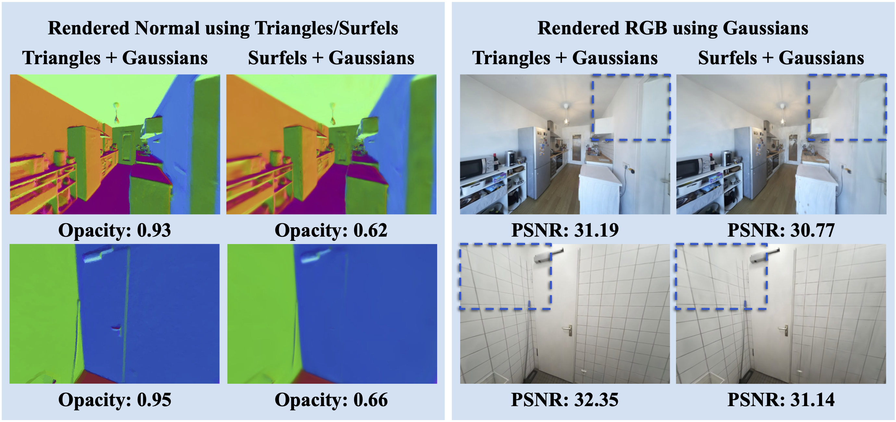
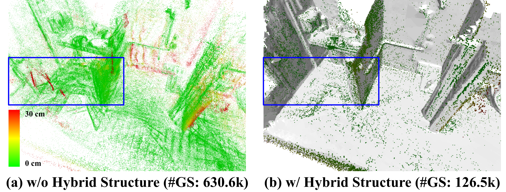
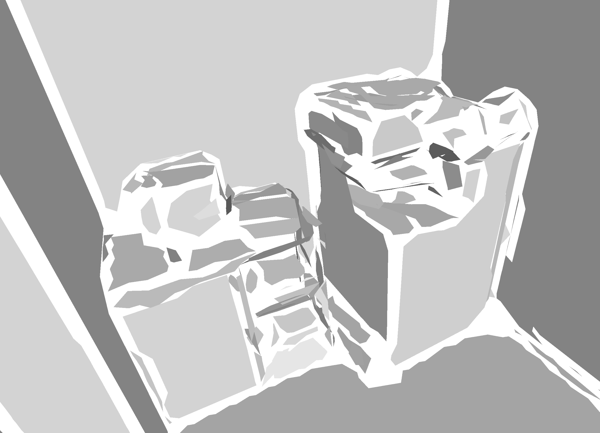
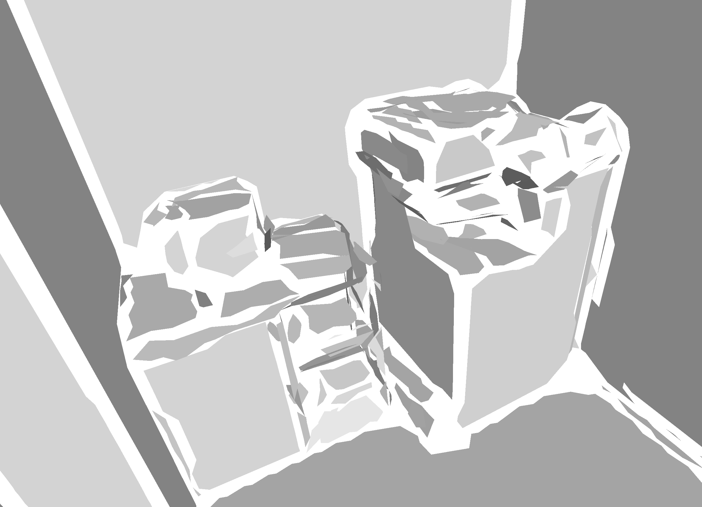

Triangle Representation. Compared to surfels, our representation produces clearer, opaque surfaces and enables finer rendering details.

Hybrid Structure. Our design effectively reduces redundancy and encourages Gaussians to concentrate around the underlying surface.


 
